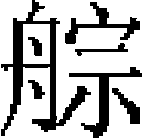

后妃
蒙古因突厥、回鶻舊俗，汗之妻曰可敦，貴妾亦曰可敦，以中國文字譯之，皆稱皇后。其庶妾則稱妃子。終元之世，後宫位號祗皇后、妃子二等。世祖至元十年，以魏初建議，授察必皇后册寶，用漢禮册，皇后自此始，是爲正宫皇后。其餘雖稱皇后，無册封之禮焉。今博采前聞，爲《后妃傳》。其母以子貴，爲皇太后者，並列於篇。
烈祖宣懿皇后
太祖光獻翼聖皇后忽魯渾皇后以下附
太祖忽蘭皇后古兒八速皇后以下附
太祖也遂皇后察合皇后以下附
太祖也速干皇后合答安皇后以下附
太祖完顔皇后
太宗孛剌合真皇后昂灰二皇后以下附
太宗昭慈皇后
定宗欽淑皇后
拖雷妃顯懿莊聖皇后
憲宗貞節皇后也速兒皇后以下附
世祖帖古倫皇后
世祖昭睿順聖皇后喃必皇后以下附
真金太子妃徽仁裕聖皇后
成宗貞慈静懿皇后
成宗卜魯罕皇后忽帖泥皇后
荅剌麻八剌元妃昭獻元聖皇后
武宗宣慈惠聖皇后速哥失理［一］皇后以下附
武宗仁獻章聖皇后
武宗文獻昭聖皇后
武宗伯忽篤皇后［二］
仁宗莊懿慈聖皇后答里麻失里皇后
英宗莊静懿聖皇后牙八忽都魯皇后以下附
甘剌麻元妃宣懿淑聖皇后
泰定帝八不罕皇后亦憐真皇后以下附
明宗八不沙皇后
明宗貞裕徽聖皇后［三］按出罕皇后以下附
文宗不答失里皇后
寧宗答里忒迷失皇后［四］
惠宗答納失里皇后
惠宗伯顔忽都皇后
惠宗完者忽都皇后木納失里皇后以下附
附諸公主
烈祖宣懿皇后斡勒忽訥氏，諱訶額倫。
先爲蔑兒乞部人也客赤列都所娶，也客赤列都御后行至斡難河，烈祖出獵，見后美，與族人捏坤太石、答里斡赤斤共劫之。后使也客赤列都策馬疾走，烈祖追不及，以后歸，遂納焉。生四子，爲太祖及合撒兒、哈準、斡赤斤，一女，爲帖木倫公主。
烈祖崩，太祖方十三歲，同族欺其母子寡弱。一日，俺巴孩之二妻，曰斡兒伯、曰莎合台，春祭，飲族人酒。后後至，分膰不及，后怒曰：「也速該雖死，我子寧慮不成人？今膰肉獨不我與，他日且棄我矣！」斡兒伯、莎合台亦怒，明日徙帳去，與后母子絶。是時，烈祖部衆皆叛去，后騎而追之，持旄纛以麾叛衆，還其大半。
太祖既長，娶光獻皇后孛兒台。也客赤列都之兄蔑兒乞部長脱黑脱阿欲爲其弟復仇，率三部蔑兒乞之衆來襲。后率太祖等騎馬入不兒罕山，使光獻皇后駕牛車從之，爲蔑兒乞人所掠。脱黑脱阿曰：「昔也速該奪吾弟之妻，今吾亦奪其子婦，可以相報矣。」始解圍而去。
及札木合與泰亦赤兀等部以三萬人來攻，太祖分所部爲十三翼以拒之，后率斡勒忽訥人爲第一翼，戰於答蘭版朱思之地。
太祖即皇帝位，尊爲太后，分部衆萬人與之，后意不足。二年，巫者闊闊出譖合撒兒於太祖，太祖惑其言，執合撒兒，將殺之。后聞之，駕白駝車馳至太祖帳中，盛怒譙責太祖。太祖惶恐謝罪，然卒奪合撒兒部衆。后鬱鬱不樂，未幾崩。至元三年定廟制世次，追上尊諡，祔烈祖爲太廟第一室。
太祖光獻翼聖皇后，孛思忽兒弘吉剌氏，諱孛兒台，與訶額倫太后同宗異族。祖曰達而罕，父曰特因，又稱爲特薛禪。太祖九歲，烈祖挈往舅家，欲爲之乞昏，道遇特薛禪［五］，奇太祖狀貌，又夜夢白海青挾日月而飛集其掌，心喜爲吉徵，乃要烈祖至其家，以后字焉。烈祖返，留太祖爲贅婿，及將崩，始命蒙力克召太祖歸。
太祖既娶后，蔑兒乞人來襲。太后有媪曰豁阿黑臣，聞車馬聲殷地，疾告太后。太后與諸子及博兒朮、者勒蔑各騎一馬入不兒罕山。后無馬，豁阿黑臣乘以花牛車，中道軸折，爲蔑兒乞人所獲。太祖乃乞師於王罕及札木合，盡虜蔑兒乞部衆。后及豁阿黑臣遇太祖於亂兵中，控其馬韁，遂與太祖同返。
太祖與札木合自幼爲俺答，至是益德之，同牧於豁兒豁納黑主不兒。歲餘，札木合意叵測，后勸太祖避之，事具《札木合傳》。
太祖稱尊號，巫者闊闊出笞辱皇弟斡赤斤，泣告於太祖。后聞之，愀然曰：「汗在，而小臣横恣如是。儻百年後，其能畏憚汗之子孫乎。」太祖乃命斡赤斤拉殺闊闊出。后明識善斷，能持大體，尤爲太祖所重。
生四子，曰朮赤、察合台、太宗、拖雷；五女，曰火臣别吉、扯扯亦堅、阿剌海别吉、秃滿倫、阿兒塔隆。至元二年，追諡光獻皇后，祔太祖廟。至大二年，加諡光獻翼聖皇后。后守第一斡兒朵。次后者，曰忽魯渾皇后、闊里傑擔皇后、脱忽思皇后，帖木倫皇后、亦憐真八剌皇后、不顔忽秃皇后、忽勝海妃子。
太祖忽蘭皇后，兀洼思蔑兒乞部長答亦兒兀孫之女也。答亦兒兀孫從乃蠻太陽汗與太祖戰於納忽山，太陽罕敗死，答亦兒兀孫大懼，請降，將納女於太祖。太祖使裨將納牙逆之，阻於兵。納牙周慎，止后途中三日。太祖疑納牙有私，欲罪之。后力自陳，既幸，知其不欺，由是益重納牙。后有寵，太祖征西域，獨以后從。生一子，曰闊列堅，以母故，視如嫡子。
后守第二斡兒朵。次后者曰古兒八速皇后，本乃蠻亦難察汗之妻，太陽汗之後母也。乃蠻敗，爲太祖所獲，依蒙古禮納之，有寵。曰亦乞列真皇后，曰脱忽思皇后，曰也真妃子、也里忽秃妃子、察真妃子、哈喇真妃子，氏族皆佚。又有乃蠻女，失其名，生子朮兒徹，早卒。
太祖也遂皇后，塔塔兒也客扯連之女。太祖滅四部塔塔兒，先得其妹也速干，有寵，因言：「有姊尤美，新嫁，不知流落何地。」太祖曰：「若得汝姊，汝能爲之下乎？」也速干允之。時也遂與其婿匿於林中，太祖搜獲之，也速干果讓姊而居。
其次一日，太祖讌軍中，也遂侍，忽顧而歎息。太祖覺有異，命在會者各退就所部而立，最後一少年倉皇不知所適。詰之，乃也遂前夫也。太祖命斬之，而寵也遂如故。
太祖將征西域，也遂請曰：「兵凶戰危，汗出師萬里，諸子皆不在側，儻一旦不諱，誰當爲嗣，願以告部衆。」太祖大驚曰：「此大事，微汝言，吾幾忘之。」由是始定立太宗。
後從征西夏，太祖出獵墮馬，因不豫。也遂與近侍脱欒扯兒必力勸班師，太祖雖不用其言，而心以爲忠。既滅西夏，盡以俘虜賜之。
后守第三斡兒朵。次曰忽魯哈剌皇后，曰阿失侖皇后，曰秃兒哈剌皇后，氏族均佚；曰察合皇后，嵬名氏西夏主李安全之女，太祖伐西夏，圍中興府［六］，安全獻女乞和；曰阿昔迷失皇后，曰完者都皇后，曰渾都魯歹妃子，曰忽魯灰妃子，曰剌伯妃子，氏族均佚。
初，太祖滅塔塔兒，有小兒兄弟二人，曰忽里，曰哈喇蒙都，爲太祖所收養。及稍長，也遂言於太祖，請使忽里兄弟收塔塔兒之餘衆，得千人。也遂有弟曰胡土虎，爲右翼千户。胡土虎之弟生女曰奴忽丹，爲諸王阿八哈妃。
太祖也速干皇后，也遂皇后之妹。生一子曰察兀兒，早卒。
守第四斡兒朵，次曰忽答罕皇后，氏族佚。
曰合答安皇后，速勒遜都氏功臣赤老温之妹。太祖爲泰亦兀赤人所獲，脱走至赤老温家，后匿太祖於羊毛車中。追者至，欲搜車，后曰：「天暑如此，羊毛中能匿人乎？吾與汝乃一家人，顧疑我如此。」追者乃去。太祖滅泰亦兀赤，其夫爲亂兵所殺，后望見太祖，亟呼：「帖木真救我！」太祖遽令釋之，以舊恩納焉。
曰斡者忽兒皇后，曰燕里皇后，氏族均佚；曰秃該妃子，與朵列格捏均爲蔑兒乞部長脱黑脱阿長子忽秃之妻。太祖敗蔑兒乞，虜秃該及朵列格捏，以朵列格捏賜太宗，而自納秃該。曰完者妃子，曰金蓮妃子，曰完台妃子，曰奴倫妃子，曰卯真妃子，氏族均佚。
又有謨蓋皇后，貝格林部長阿體耶訥赤之女，無所出。太祖崩，太宗甚禮重之，察合台欲娶之，太宗不與。又有肅良合妃子，高麗人，佚其名；八不别及妃子，佚其氏族。其所守斡兒朵均未詳。
太祖公主皇后，完顔氏，金衛紹王女也。太祖圍燕京，金宣宗納女請和。太祖命阿剌淺使於金，金諸帝女未嫁者七人，后最秀慧，宫中稱爲小姐姐。宣宗封爲岐國公主，以遣嫁焉。引見阿剌淺，即拜后於階下，又請后北鄉拜，后不敢拒。於是金人使丞相完顔福興送后至太祖營，並媵護駕將十人，細軍百人，童男女各五百人，采繡衣三千襲，馬三千匹，金寶稱是。后母欽聖夫人袁氏亦從之。太祖以其爲貴主，禮重之，國人呼爲公主皇后。太祖於四斡兒朵之外，又爲后建斡兒朵於斡兒洹水西。邱處機至西域，道過和林，后與西夏公主各遣使送寒具等食。后年甚高，阿里不哥僭位和林時尚在焉。
太宗孛剌合真皇后，次曰昂灰二皇后，氏族均佚。太宗在潛邸，以憲宗爲子，命昂灰皇后撫育之。次曰忽帖尼三皇后，乞里吉思氏，生二子，曰闊端，曰滅里。憲宗二年，遷后於闊端所居地之西。
又有土拉起那妃子，本蔑兒乞部長答亦思兀妻，太祖滅蔑兒乞，以土拉起那賜太宗。
太宗昭慈皇后乃馬真氏，諱朵列格捏，號六皇后。先爲蔑兒乞部長脱黑脱阿長子忽秃妻，太祖滅蔑兒乞，以后賜太宗。生一子，爲定宗。太宗崩，后稱制五年，復歸政於定宗，而國事猶決於后，事具《本紀》。至元二年追上尊諡，祔太宗廟。
定宗欽淑皇后斡兀立氏，諱海迷失，號三皇后。定宗崩，后臨朝稱制者四年。憲宗即位，后始歸政焉。二年，后與皇孫失烈門厭禳事覺，謫失烈門於没赤脱之地，賜后死。至元三年追上尊諡，祔定宗廟。
定宗在潛邸，其元妃曰烏兀兒黑迷失，蔑兒乞氏，卒年未詳。
顯懿莊聖皇后克烈氏，諱唆魯忽帖塔尼，太宗母弟拖雷妃，憲宗、世祖母也。父札合敢不，克烈部長王汗弟，奔於乃蠻。太祖滅乃蠻，札合敢不獻二女以降，長曰亦巴合，次即后。太祖納亦巴合，而以后賜拖雷。
蒙古俗，父之遺産多歸幼子，太祖臨崩，部兵十二萬九千人，拖雷分十萬一千，諸將多其舊部。拖雷早卒，憲宗、世祖尚幼，事皆決於后。后有才智，能馭衆，尤與太祖長孫拔都親厚。太宗崩，與諸王大臣共立定宗，后主賞賚之事，優渥異常，故内外稱善。定宗崩，拔都首建議立憲宗，衆從之，位遂定。憲宗二年，后崩。世祖至元二年，追上尊諡曰莊聖皇后，祔睿宗廟。武宗至大二年十月，加諡曰顯懿莊聖皇后。三年十月，上玉册焉。
憲宗貞節皇后，弘吉剌氏，諱忽都台，特薛禪孫忙哥陳女也，早崩。至元二年，追上尊諡，祔憲宗廟。
后初崩，憲宗即以其妹也速兒繼后位。次曰出卑三皇后，佚其氏族。憲宗八年，從伐宋，留駐六盤山。明年秋七月，憲宗崩，九月，后亦卒。次曰亦乞烈氏皇后，昌王孛秃子鎖郎哈女。次曰明里忽都魯皇后，佚其氏族，泰定三年尚在，詔后守班秃大王營帳。次曰火里差皇后，火魯剌思氏，憲宗在潛邸，太宗爲帝娶火里差爲妃，後亦稱皇后。又有失力吉妃子，伯要兀氏。
世祖帖古倫皇后，弘吉剌氏，按陳孫脱憐女也。事世祖於潛邸爲元妃，守第一斡兒朵。
世祖昭睿順聖皇后弘吉剌氏，諱察必，按陳女也。貌甚美，侍世祖於潛邸，最有寵，生皇太子真金。
世祖伐宋，渡江圍鄂州，憲宗崩於合州，皇弟阿里不哥留守和林，其黨阿藍答兒等勸之自立，乘傳發山後兵，去開平僅百餘里。后使人詰之曰：「發兵，大事也，太祖曾孫真金在此，何故不使知之？」阿藍答兒意沮。阿里不哥使脱里出行省燕京僉民兵，后聞之，密使人馳報世祖，趣班師。迨世祖北歸，事乃定。
中統三年，立爲皇后。至元十年十月，授册寶。元代册皇后禮自后始。
后性仁明，隨事諷諫，多裨時政。有怯薛官請割京師城外地爲牧場，奏可，以圖進。后欲諫，至帝前，先陽責太保劉秉忠曰：「汝，漢人明達者，言則主聽，何爲不諫？初定都時，以地牧馬，無不可者，今軍民分業已定，奈何奪之？」世祖默然，事遂寢。
性儉素，嘗以令旨取太府監繒帛各一端。世祖謂軍國所需，非私家物也。后自是率宫人親執女工，拘舊弓弦練之，緝爲綢，製衣，其靭比繒綺。宣徽院舊羊臑皮置不用，后取之緝爲地毯。胡帽無簷，世祖苦日光眩目，以語后。后即益前簷，世祖大悦，命爲式。又製一衣，前有裳無衽，後長倍前，亦無領袖，綴以兩襻，謂之比甲，便騎射，時多效之。
宋平，幼主入朝上都，大宴，衆皆歡甚。世祖察后色不懌，曰：「今我平江南，自此不用兵，衆皆喜，爾胡不然？」后跪奏曰：「妾聞自古無千歲之國，毋致吾母子及此，幸矣！」時宋府庫寶物陳於殿前，世祖召視之，后徧視即去。世祖遣宦者追問，欲取何物，后曰：「宋人貯蓄以遺子孫，其子孫不能守，而歸於我，我何取焉？」宋全太后至上都，不習風土，其宫人安定夫人陳氏、安康夫人朱氏及二小姬皆自縊邸中。世祖怒，命梟其首。全太后驚怖。后乘間從容爲奏，聽回江南，不允。再三請，世祖曰：「爾婦人無遠慮，彼一國之母，遺民尚在，若聽南歸，萬一浮言偶動，即難保全，非所以愛之也。時加存恤可耳。」后由是日厚全氏。
翰林學士王思廉嘗進讀《通鑑》，至唐太宗怒魏徵，長孫皇后朝服拜賀得賢臣事，世祖命内官引思廉詣后閣前覆講之。后曰：「是誠有益聖德。復有類此者，汝宜以時進讀。」其賢明多類此。
十八年二月，崩。二十一年，世祖上尊號，亦追上皇后尊號曰貞懿昭聖順天睿文光應皇后。三十一年，成宗即位，追上尊諡曰昭睿順聖皇后，祔世祖廟。
后守第二斡兒朵。其次曰南必皇后，翁吉剌氏，納陳孫仙童之女，或曰按陳之女。至元二十年，册爲皇后。時世祖春秋高，大臣多因后白事。生一子曰鐵滅赤，早卒。
守第三斡耳朵者，曰塔剌海皇后、奴罕皇后，並佚其氏族。
守第四斡兒朵者，曰烏式真皇后，許兀慎氏，功臣博爾忽之女也，生子曰脱歡，曰愛牙赤。次闊闊倫皇后，佚其氏族。
又有速哥荅思皇后，泰定三年詔守世祖斡兒朵。又八八罕妃子、撒不忽妃子，並佚其氏族。
徽仁裕聖皇后，弘吉剌氏，諱伯藍也怯赤，又諱闊闊真，皇太子真金妃，成宗母也。
先是，世祖出獵，道渴，至一帳，見一女子緝駝茸，從求馬湩。曰：「馬湩固有之，但我父母諸兄皆不在，我女子，難以與汝。」世祖欲去，又曰：「我獨居此，汝自來去，於禮不宜。父母即歸，盍姑待之？」須臾果歸，出馬湩飲焉。世祖既去，歎息曰：「此女倉卒知禮若是，豈非佳婦耶？」後諸臣請擇太子妃，俱不當上意。有老臣嘗從獵，知此事，且聞后未字，具白世祖，大喜，納爲太子妃。
后性孝謹，善事中宫，起居服御無纖介不至，世祖每稱爲賢德婦。一日，世祖幸視太子疾，見牀笫間設織金卧具，世祖責曰：「我嘗以汝爲賢，何奢靡如此？」妃跪答曰：「常時不敢用，今以太子病，恐侵濕氣，乃陳之。」即時撤去。
成宗即位，尊皇考爲帝，廟號裕宗，尊后爲皇太后，設太后官屬，置徽政院。後院官受獻浙西田七百頃，籍位下，后曰：「江南率土，皆國家所有，且我一寡婦人，安用是耶！」即命中書省盡罷之。后有弟求官，后不悦曰：「汝非其人也，勿以累我。」後果黜。
大德四年二月崩，上尊諡曰裕聖皇后，祔裕宗廟，葬先陵。至大三年十月，加諡徽仁裕聖皇后。
裕宗又有安真迷失妃子，無子，氏族佚。
后長子曰晉王甘麻剌，生泰定帝；次子曰答剌麻八剌，生武宗、仁宗。雖神器代易，陵替失序，而人繼正統者，罔非其裔胄云。
成宗貞慈静懿皇后，弘吉剌氏，諱失憐答里，斡羅陳女也。侍帝藩邸爲元妃，生一子曰德壽太子，帝未即位卒。武宗至大三年，上尊諡，祔成宗廟。
成宗卜魯罕皇后，伯牙吾氏，駙馬脱思忽之女。元貞元年，立爲后。大德三年十月，授册寶。
時帝多疾，后居中用事，然頗信任相臣哈剌哈孫，舉措不撓，號爲綏静。
八年正月，地震平陽，后召平章愛薛問曰：「災異若此，殆下民所致耶？」對曰：「天地示警，於民何與？」后深然之。京師嘗建天壽萬寧寺，中塑秘密佛，形象詭褻，后幸寺，見之，惡焉，以帕蒙面，尋敕毁去。羣臣欲上尊號，帝不許，后因自請。帝曰：「朕病日久，國事多廢不舉，奚以此虚文爲耶？」議遂寢。后用事久，頗專制。
十年，出帝兄答剌麻八剌元妃與其子愛育黎拔八達，居於懷州，而妃長子懷寧王海山方總兵居朔方。明年，帝崩，無子，后恐其兄弟立修怨，乃召安西王阿難答至京師，謀立之。丞相阿忽台等欲奉后垂簾聽政，而哈剌哈孫已密報愛育黎拔八達先入，以計誅阿忽台等，清宫禁，迎立其兄，是爲武宗。既殺西安王，並構后以交通之罪，遷居東安州，尋賜死。成宗又有忽帖尼皇后，乞兒吉思氏。
昭獻元聖皇后，弘吉剌氏，諱答吉，魯王按陳孫渾都帖木兒女，成宗同母兄答剌麻八剌元妃，武宗、仁宗母也。世祖初以宫人郭氏賜答剌麻八剌，後乃納后。
大德九年，成宗不豫，后及仁宗出居懷州。成宗崩，仁宗自懷州奉后還京師，平内難，迎武宗即位，尊皇考爲帝，尊后爲皇太后。是年冬，朝后於隆福宫，上皇太后册寶。
至大元年三月，爲后建興聖宫。當武宗守邊時，后嘗親禱於五臺山。明年正月，遂復幸五臺山，修佛事。詔高麗王璋從之。四月，立興聖宫江淮財賦總管府。三年，又以興聖宫鷹坊等户四千，分處遼陽，建萬户府統之。是年十月，率皇太子諸王羣臣朝，上徽號曰儀天興聖慈仁昭懿壽元皇太后。越日，后恭謝太廟，武宗更推廣恩意，詔赦天下。仁宗踐位，加上尊號曰全德泰寧福慶皇太后。英宗立，尊爲太皇太后，上尊號曰徽文崇祐太皇太后。是日，御大明殿受朝賀。越日，以禮成，復告廟。元世諸皇后，光耀尊寵，莫有其比焉。
后居東朝，頗仁儉，宫女皆教治女工。每幸上都，必敕鷹坊衛士先往，毋害民稼。性敏給，有權數，歷佐三朝，威福己出。内則黑驢母亦烈失八用事，外則幸臣失列門、紐鄰及丞相鐵木迭兒相率夤緣爲奸，以至箠辱平章張珪等，紊亂綱紀。仁宗恐傷后意，不窮問。
仁宗崩，后命鐵木迭兒復爲右丞相，御史中丞楊朵兒只、中書平章政事蕭拜住忤后旨，鐵木迭兒矯詔殺之。失列門又以太后命更易朝官，英宗曰：「此豈除官時耶？且先帝舊臣，不宜輕動。俟朕即位，議於宗親、元老，賢者任之，邪者黜之可也。」事遂已。
初，后以武宗長子和世㻋英偉，英宗弱，易制，羣小亦以立明宗爲不利於己，共擁戴英宗。既即位，太后來賀，見帝有剛毅之色，退曰：「我不擬養此兒也。」遂飲恨成疾。至治二年九月崩。明年，上尊諡，祔順宗廟。
武宗宣慈惠聖皇后［七］，弘吉剌氏，諱真哥，按陳裔孫迸不剌之女。至大三年正月，册爲后，無子。仁宗皇慶二年，立長秋寺，掌后宫政，秩三品。泰定四年，崩。八月，上尊諡。惠宗元統二年，詔立武宗廟后主。丞相伯顔與羣僚議曰：「先朝以真哥皇后無子，不祔廟。今所當祔者，其明宗母，抑文宗母也。」惠宗爲明宗長子，伯顔意有在，而羣臣亦依違莫決。太常博士逯魯曾對曰：「真哥皇后，早膺册寶，則文、明二母皆妾也。今以無子之故，不爲立主，而以妾母爲正，是爲臣而廢先君之后，爲子而追封先父之妾，於禮不可。昔燕王慕容垂即位，追廢母后，而尊其生母配享先王，爲萬世笑，豈宜復蹈其失乎？」集賢學士陳顥素疾魯曾，乃曰：「唐太宗册曹王明之母爲后，是亦二后也，奚爲不可？」魯曾曰：「堯之母爲帝嚳妃，堯立爲帝，未聞尊爲后以配嚳皇。上爲大元天子，不法堯、舜，而法唐太宗耶？唐太宗初欲立曹王明母爲后，魏徵諫止，無册立事。顥蓋妄爲駁難，其言不倫。」衆皆是魯曾議，於是升祔禮定，以后配焉。
武宗又有速哥失里皇后，按陳從孫哈兒只之女，亦無子。又有完者歹皇后，氏族佚。有妃洪氏，不知所由進，最有寵。每七夕，結彩樓於臺上，妃登樓散彩，令宫人俯拾之。帝又於仲秋夜月，與衆嬪御泛舟太液池，設女軍，夾以數船，左曰鳳隊，右曰鶴團。冠服旗旓瑰奇詄麗，令互相衝擊爲戲。有駱妃，善歌舞，爲帝奏《月照臨》之曲，夜分乃罷。太液池在萬歲山北，舊名瓊花島，引金河水出石龍口，注方池，伏流至山半仁智殿後，有石琢蟠龍昂首噴出，東西流入池。山前白石橋長二百尺，迤至池中坻上，東爲靈囿，多畜珍禽奇獸。至元四年，賜今名。車駕歲幸上都，必先宴百官於此云。
武宗仁獻章聖皇后亦乞烈氏，諱壽童，世祖皇子安西王忙哥剌女奴兀倫公主所出。初爲帝妃，生明宗。天曆二年，追上尊諡曰。至正六年，改諡曰莊獻嗣聖皇后。
武宗文獻昭聖皇后唐兀氏，諱闕。亦帝妃，生文宗。天曆二年，追上尊諡。
武宗伯忽篤皇后，怯烈氏，年十三，侍武宗於潛邸。後從昭獻元聖皇后出居懷州。后性敏給周慎，昭獻皇后愛之。英宗即位，命主太祖完顔氏皇后斡爾朵。至治三年，徙居世祖迭只斡爾朵。昭獻皇后崩，出私財三千五百貫作順聖寺以奉昭獻神御，又作崇源寺以奉英宗神御。
仁宗莊懿慈聖皇后，弘吉剌氏，諱阿納失失里，生英宗。皇慶二年三月，立爲后，上册寶，遣官祭告天地於南郊及太廟，改典内院爲中政院，秩正二品。先仁宗崩。英宗即位，追上尊諡，祔廟。册曰：「至孝所以揚親，易名所以表行，矧爲天下母而養弗逮，履天子位而報則豐。」又曰：「昊天不吊，景命靡常。」詞極悲痛云。仁宗又有答里麻失里皇后，氏族佚。
英宗莊静懿聖皇后亦乞烈氏，諱連哥八剌，駙馬昌王阿失之女，成宗女昌國大長公主益里海牙所出也。至治元年二月，册爲后。無子。泰定四年六月崩，上尊諡。英宗南坡之變，典禮闕如。後至元二年，始與武宗、明宗后祔廟。
英宗又有牙八忽都魯皇后、朵兒只班皇后。鐵失之妹爲第二皇后，當爲牙八忽都魯。鐵失弑英宗，伏誅，御史許有壬以皇后猶在宫中，請加貶廢，後不知所終。
宣懿淑聖皇后，弘吉剌氏，諱普顔怯里迷失，晉王甘刺麻元妃，泰定帝母也。至元三年九月，泰定帝即皇帝位，十二月戊辰，追尊爲皇太后。
泰定帝八不罕皇后，弘吉剌氏，按陳孫斡留察兒之女。泰定元年三月，册爲后。二年，封后父爲威靖王。初，后侍帝藩邸，生子阿速吉八。元年，立爲皇太子。帝崩，皇太子即位，後不知所終。文宗詔徙后於東安州，崩年失。
帝又有皇后七人：曰亦憐真八剌，曰忽剌，曰也速，曰撒答八剌，曰卜顔怯里迷失，曰失烈帖木兒，曰鐵你。亦憐真八剌皇后，亦乞烈氏，昌國大長公主益里海牙女，二年，與帝受佛戒於帝師。撒答八剌皇后，帝姊壽寧公主女也，三年，納之宫中，先卒。餘氏族俱佚。文宗時，太平王燕帖木兒嘗娶帝后爲夫人，其名亦佚。
又妃二人，曰必罕，曰速哥答里，皆弘吉剌氏，衮王買住罕女也。天曆初，俱徙東安州。
明宗八不沙皇后，乃馬真氏，泰定帝甥壽寧公主之女，侍帝潛邸，生寧宗。天曆二年八月，明宗暴崩，文宗入臨，燕鐵木兒以后命奉皇帝寶授於文宗。是年，立寧徽寺掌后中宫事，又奉后鈔萬錠、帛二千匹供費用。后命帝師率羣僧爲帝修佛事於大天源延聖寺七日，又命道士建醮於玉虚、天寶、太乙、萬壽四宫及武當、龍虎二山。至順元年，復詔有司供后幣二百匹。四月，文宗不答失里皇后與宦者謀弑后，尋崩。或云不答失里皇后推后墮地壚中而崩。後至元二年，祔廟。
明宗貞裕徽聖皇后，罕禄魯氏，諱邁來迪，郡王阿兒厮蘭之裔。祖曰阿里朮兀，父曰帖木迭兒。明宗爲周王時，北行過其部，帖木迭兒以后進，生惠宗。文宗既復位，忌之，以明宗言帝非己子，自高麗遷於廣西，命奎章閣學士虞集草詔告中外，事具《本紀》。後至元二年，追上尊諡。
明宗又有后六人：曰按出罕，曰月魯沙，曰不顔忽都，曰野蘇，曰脱忽思，曰阿梯里，氏族皆佚。脱忽思皇后嘗守明宗斡兒朵，至順二年，賜湘潭户四萬爲湯沐邑。然當時文移稱娘子，不稱皇后焉。惠宗時，哈麻提調寧徽寺，出入脱忽思宫中，爲御史海壽所劾。寧徽寺者，掌脱忽思位下錢糧。脱忽思泣訴於帝，帝爲奪海壽官。
文宗不答失里皇后，弘吉剌氏，順宗女魯國大長公主祥哥剌吉所出。祖父帖木兒，父駙馬琱阿不剌，皆封魯王。天曆元年，册立爲皇后。二年二月，授册寶。生皇太子阿剌忒納答剌，早卒。又生燕帖古思、太平訥二皇子。
后篤信釋教，嘗以銀五萬兩助建大承天護聖寺，又賜籍没張珪家田四百頃。
至順三年八月，文宗崩，丞相燕帖木兒請立燕帖古思，后不從。文宗大漸時，命傳位於明宗子。明宗長子妥歡帖木兒謫静江，燕帖木兒謂后曰：「阿婆且權守大位，妥歡帖木兒居南徼瘴癘之地，未審存亡，我與宗室諸王徐議之可也。」至是年十月，始以明宗次子懿璘質班留京師，白於后，宣遺命而立之，是爲寧宗，甫七歲，后同聽政。十一月，奉册寶尊后爲皇太后，御興聖宫，受朝賀。
是月，寧宗崩，燕帖木兒復請立燕帖古思。后曰：「天位至重，吾子尚幼，明宗長子妥歡帖木兒在廣西，今十三歲矣，其迎立之。」約傳位於燕帖古思，若武、仁故事。燕帖木兒知事不獲已，乃奉皇太后詔旨，遣使迎惠宗於静江。
明年六月，惠宗即位，爲皇太后置徽政院，設官三百六十六員。二年，上尊號曰贊天開聖仁壽徽懿昭宣皇太后。至元二年冬，復上尊號曰貞文慈祐儲善衍慶福元太皇太后，仍臨朝稱制。先議尊爲太皇太后，參知政事許有壬諫以爲非禮，不聽。時南臺御史太不花亦奏以叔母不宜加太皇太后尊稱，后初聞之怒，徐曰：「風憲有臣如此，可謂能守祖宗法矣。」賜金幣以旌其直。六年六月丙申，詔曰：
昔我皇祖武宗傳位仁宗，定議易世之後，舍子傳姪。祖母太皇太后惑於憸慝，俾皇考明宗出封雲南。英宗遇弑，正統寖偏，我皇考以武宗之嫡，逃居朔漠，及泰定升遐，宗王大臣同心翼戴，肇啟大事，時以近地，先迎懷王，暫總機務。繼揆天理人倫，不當竊據，假讓位之名，以璽紱來上。我皇考推誠不疑，授以皇太子寶，使守青宫。乃苞藏禍心，迎謁行在，與其臣月魯不花、也里牙、明理董阿等謀爲不軌，使我皇考飲恨上賓。歸而再御宸極，思欲自解於天下，乃謂夫何數日之間，宫車宴駕。海内聞之，靡不切齒。又私圖傳子，虚構邪言，嫁禍八不沙里后，謂朕非明宗之子，俾出居遐陬。祖宗大業，幾於不繼。内懷媿慊，則殺也里牙以杜口。及其將死，哀鳴畏在天之震怒，始議立明考之嗣，冀逭冥誅。叔母不答失里自謀稱制，貪引童昏，舍明考之冢嗣，而立朕弟懿璘質班，曾未匝月，奄復不年，諸王大臣以賢以長，扶朕踐阼。國之大政，遲未躬親。賴天之靈，權奸屏黜，顧念治必本於盡孝，事莫先於正名，永惟鞠育罔極之恩，忍忘不共戴天之義。既往之罪，不可勝誅，其命太常撤去圖帖睦爾在廟之主。不答失里本朕之嬸母，乃陰構奸臣，弗顧非禮，僭膺太皇太后尊號，迹其閨門之禍，離間骨肉，罪惡尤重，揆之大義，削去鴻名，可東安州安置。燕帖古思昔在幼冲，情雖可原，理難同處，惟朕終不蹈覆轍，專務殘酷，可放諸高麗。當時賊臣月魯不花、也里牙已死，其以明理董阿明正典刑。
后至東安州，尋賜死。文宗固有罪，然后舍其愛子而立兄之子，割情蹈義，非由箝制。一旦反覆，使母子俱殞。追緣釁鬩，報亦酷焉。
寧宗答里也忒迷失皇后，弘吉剌氏。至順三年十月，帝即位，立爲皇后，時年甚幼。至正二十八年崩，祔寧宗廟。
惠宗答納失里皇后，伯牙吾氏，太平王燕帖木兒女也。至順四年六月，帝即位，七月立爲皇后。元統二年，授册寶。
惠宗立，非燕帖木兒意，而后頗有寵，性貪冒黯貨。時詔立鹽局，官自賣鹽，后亦命宦者孛羅帖木兒取鹽十萬引入中政院，帝又命發兩

船下番爲后營利。至元二年，后兄左丞相唐其勢與太師伯顔争權，坐謀逆誅。弟塔剌海逃入宫，匿后坐下，后以衣蔽之，左右曳出斬首，血濺后衣。伯顔奏曰：「豈有兄弟爲逆，而皇后護之者？」遂並執后。后呼帝曰：「陛下救我！」帝畏伯顔，乃曰：「汝兄弟爲逆，豈能相救？」於是遷后出宫，伯顔尋進鴆弑后於開平民舍。
惠宗伯顔忽都皇后，弘吉剌氏，武宗宣慈惠聖皇后之姪，毓德王孛羅帖木兒女也。後至元三年三月，册爲后。生皇子真金，二歲而夭。后性簡重節儉，不妒忌，動中禮法。待妾媵、太子皆有恩意。時第二皇后奇氏有寵，居興聖西宫，帝希幸東内。左右或以爲言，后無纖微怨望見於言色。從帝巡上都，次中道，一夕，帝欲臨幸，使内官馳告，后不可，曰：「暮夜非至尊往來之候。」中使往復者三，竟不納，帝益賢之。至正十四年，后母卒，帝加禮賻鈔三百錠。后居坤德殿，終日端坐，未嘗妄踰閫閾。二十五年八月崩，年四十二。奇后見后遺衣質敝，大笑曰：「正宫所服何至斯耶！」皇太子自太原歸，哭之極哀。
惠宗完者忽都皇后，奇氏，高麗人。其家微也。故事，高麗國歲獻媵妾。徽政院使秃滿迭兒進爲宫女，主供茗飲，尋見寵幸。生子愛猷識理達臘，後立爲皇太子。時答納失里皇后方驕妒，知當帝意，數箠辱之。及后遇害，帝欲立焉，丞相伯顔争不可。伯顔罷，學士沙剌班希旨，請立爲第二皇后，居興聖宫，改徽政院爲資政院。
后爲人獧黠，務自矯飾，無事則取《女孝經》、史書，訪問歷代皇后有賢行者爲法。四方貢獻珍味，非薦太廟不敢先食。京師大饑，命官作糜粥賑之。又出金銀粟帛，令宦者朴不花置冢，瘞遺骼十餘萬，復命僧建水陸大會度之。太子既長，帝爲建端本堂，命儒臣教授國法。帝與太子多受佛戒，帝師因啟后曰：「太子向學佛法，頗開悟，今乃使習孔子教，恐壞真性。」后曰：「我雖居深宫，不明道德，嘗聞自古及今治天下者，須用孔子教，舍此則爲異端。佛法雖好，不可以治天下，安可使太子不讀書耶？」帝師慚退。其後正位中宫，誕日百官進箋賀，后誡左丞相沙藍答里曰：「自世祖以來，正宫皇后壽日未嘗進箋。近年雖有，不合典禮。」卻之。其假託正誼如此。
帝怠棄政事，后與太子遽謀内禪，使朴不花喻意丞相太平，太平不答。復詔太平至宫，舉酒賜之，申前説，太平依違而已。帝亦知后意，怒而疏之。
然后頗盜威柄，賞罰由己。朴不花有罪被劾，后諷御史大夫佛家奴爲疏辨。佛家奴謀再劾之，后嗾御史轉奏，謫潮河。
后族奇氏在高麗者，怙勢驕横，高麗王伯顔帖木兒怒，盡殺之。后謂皇太子曰：「汝年已長，不能爲我復仇耶？」皇太子乃請帝廢高麗王，立其弟塔思帖木兒留京師者爲王，以奇氏族子三寶奴爲太子，將作同知崔帖木兒爲丞相，將兵萬人送之至鴨緑江，爲伏兵所敗，餘十七騎而返。
時中書平章政事孛羅帖木兒鎮大同，與太子有嫌。帝亦憤其跋扈，命太尉擴廓帖木兒討之。孛羅帖木兒遂舉兵犯闕，及入都城，嗾監察御史武起宗言后撓亂國政，宜遷居於外。帝弗聽，孛羅帖木兒遂矯制幽后於諸色總管府，使其黨姚伯顔不花守之。太子先奔太原。尋逼后入宫，取印章，僞爲書以召太子。復幽后舊所。后數納美女求脱，至百日，始釋之。及孛羅帖木兒伏誅，太子還，后又密令擴廓帖木兒以重兵擁入，劫帝禪位。擴廊帖木兒知其意。將至京師，散遣諸軍，陰謀遂沮。
會伯顔皇后崩，中書省又以太子故，請后正尊位，奏改資政院，兼主中政院。帝初不許，俄授册寶，進爵奇氏三世爲王，至正二十五年十二月也。先是，后爲第二皇后時，監察御史李泌言：「世祖有誓：子孫不得與高麗女子共事宗廟。陛下踐世祖之位，何忍忘世祖之言，乃以高麗女並位宫中。今災異屢起，河決地震，盜賊滋蔓，皆陰盛陽微之漸。乞仍降爲妃，庶使三辰定位，災異可息。」不聽，卒成亡國之禍云。元稱西夏、高麗，不舉其國，舉其部族曰唐兀氏、肅良合氏。至是乃以后爲肅良合氏，詔天下。二十八年，明兵破大都，從帝北奔。二十九年，崩。
帝多内嬖，其妃嬪可考者，有龍、程、張、戈、支、祁諸妃。又有木納失里皇后稱三皇后，弘吉剌氏居隆福宫，至正三年卒。龍妃尤嗜利，帝賜繒綺，率纂組奇瑰，與他珍異動以鉅萬，令宦者貨於左掖門内，售者麕至，名其地曰繡市焉。
史臣曰：蒙古之興，由於宣懿皇后，以一寡婦提挈孤子，卒能奮於艱難，弼成大業，雖《詩》《書》所載，何以尚之！中葉以後，昭獻淫恣，徇嬖寵之言，不立周王，禍延數世，元祚由此替矣。惠宗惑於孽后，寵遇無節，揆其政刑紊亂，雖不盡由帷闥，而啟釁召戎，則奇后實爲之導焉。嗚乎！是亦褒閻之亞匹歟？
元制，皇女及諸王女皆稱公主。記載弗備，甄其可考者，附於《后妃傳》後。
烈祖女帖木倫，封昌國大長公主，適昌王孛秃。
太祖女火臣别吉，封昌國大長公主，適孛秃爲繼室。
太祖女扯扯亦堅公主，適衛拉特部長忽都哈别吉子土拉而吉。
太祖女阿剌海别吉，封趙國大長公主，始適汪古部長長子不顔昔班，改適其兄子鎮國，再適趙王孛要合。太祖征西域，公主留漠南，號監國公主。公主性明敏，有智數，侍女數千人，給事左右。軍國大事，雖木華黎亦禀命焉。
太祖女秃滿倫，封鄆國公主，適赤窟駙馬。
太祖女阿兒塔隆公主，適斡勒忽訥部長泰赤子札費圖兒薛禪塔出古列堅，爲宣懿皇后兄弟之子。定宗時，阿兒塔隆坐事賜死。
太祖女也立可敦，封高昌公主，適畏兀兒亦都護巴而朮阿兒忒的斤。拉施特書：太祖女布亦塞克，許字弘吉剌部長帖兒該阿蔑，嫌其貌陋，不欲娶，太祖殺之。東西書譯音迥别，未知爲太祖第幾女。又拉施特書：千户布哈古而干娶太祖女，然則太祖固不止五女也。
太宗女唆兒哈罕，封魯國公主，適納合駙馬。
太宗兄朮赤女大魯罕公主，適斡亦剌惕部長忽都合子脱列勒赤。
睿宗拖雷女也速不花，封魯國大長公主，適斡陳駙馬。
睿宗拖雷女薛木罕，封趙國公主，適鄃王聶古 ，再適察忽駙馬。
，再適察忽駙馬。
太祖孫女薛只干，封魯國公主，適納陳駙馬
太祖弟合赤温子阿勒赤歹大王女，封昌國大長公主，適昌王札忽爾臣。
定宗女巴巴哈兒公主，適亦都護大赤哈兒的斤。
定宗女葉里迷失，封趙國大長公主，適趙王君不花。
憲宗女伯雅倫，封昌國大長公主，適昌王忽憐。
憲宗女失林公主，適弘吉剌部長朮臣駙馬，卒，以其妹爲繼室，失名及封號。
世祖女月烈，封趙國大長公主，適趙王愛不花，先追封皇姑齊國大長公主，後改封。
世祖女囊家真，封魯國大長公主，始適斡羅陳爲繼室，改適納陳子帖木兒，再適帖木兒之弟蠻子台。
世祖女兀魯真，封昌國公主，適孛花駙馬。
世祖女忽都魯堅迷失公主，適高麗王王昛，封安平公主，追封皇姑齊國大長公主。元貞二年，公主從昛入朝。及歸高麗，宫中芍藥盛開，左右采以獻。公主忽泣下，數日而卒。高麗世子謜疑昛妾殺之，事具《高麗傳》。
世祖女茶倫，封昌國大長公主，適帖監干駙馬。
太宗子闊出太子女安秃，封昌國大長公主，適昌王瑣郎哈。
太宗孫女卜魯罕，封高昌公主，適高昌王紐林的斤，卒，以其妹八卜义公主爲繼室。
太宗子闊端太子孫女朵而只思蠻，封高昌公主，適高昌王帖木兒補化。
憲宗孫女卜蘭奚，封昌國大公主，適昌王忽憐爲繼室。
憲宗曾孫女買的，封昌國大長公主，適昌王阿失爲繼室。
世祖孫女脱脱灰公主，適秃滿答兒駙馬，晉封榮壽大長公主。
真金太子女忽答迭迷失，封趙國大長公主，適趙王闊里吉思。
真金太子女南阿不剌，封魯國大長公主，適蠻子台爲繼室。
安西王忙哥剌女奴兀倫公主，適鎖郎哈爲繼室。
安西王阿難答女兀魯真公主，適紐林的斤爲繼室。
成宗女益里海涯，封昌國大長公主，適昌王阿失。
成宗女愛牙失里，封趙國大長公主，適闊里吉思爲繼室。
成宗女普納，適魯王桑哥不剌，封鄆安大長公主，進號皇姑魯國大長公主。
晉王甘剌麻女卜答失里，封薊國大長公主，適高麗王謜。
晉王甘剌麻女壽寧大長公主。
晉王甘剌麻女阿剌的納八剌，封趙國公主，適趙王注安。
答剌麻八麻太子女祥哥剌吉，封魯國大長公主，適阿不剌駙馬。蚤寡守節，不從諸叔繼尚。女爲文宗皇后。天曆二年，詔曰：「朕思庶民若此，猶當旌表，况在懿親？趙世延、虞集等可議封號以聞。」乃晉封徽文懿福貞壽大長公主。
營王也先帖木兒女亦憐只班，封濮國大長公主，適瀋王王燾。
仁宗女闊闊倫公主，適特薛禪孫脱羅本。
魏王阿不哥女金童，封曹國大長公主，適王燾爲繼室。
魏王阿不哥女寶塔失憐公主，封徽懿魯國大長公主，適高麗王顓。
明宗女不答昔你，封明慧貞懿大長公主。
明宗女月魯公主，適嗣昌王沙藍朵兒只。
【校勘記】
［一］「速哥失理」正文作「速哥失里」。
［二］「武宗伯忽篤皇后」，原在「武宗宣慈惠聖皇后」下，據正文移此。
［三］「貞」，原作「真」，據正文及《元史》卷一一四列傳第一《后妃》改。
［四］「答里忒迷失皇后」，正文作「答里也忒迷失皇后」。
［五］「特薛禪」，原作「特貌禪」，據上文改。又按《元史》卷一一四列傳第一《后妃》本傳云：「有功賜名薛禪，故兼稱曰特薛禪。」
［六］「中興府」，原作「中與府」，按本書《太祖本紀下》「十三年戊寅春正月，圍中興府」，據改。
［七］「惠聖」，原倒作「聖惠」，據目録、下文及《元史》卷一一四列傳第一《后妃》改。
本章完!